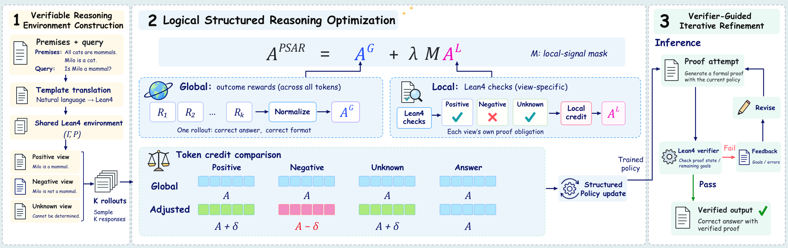
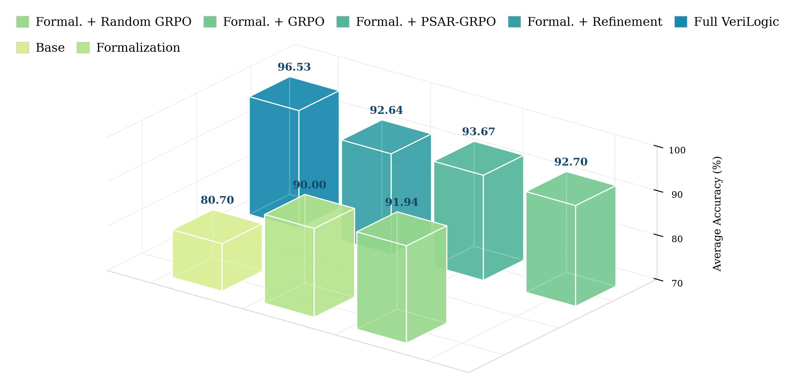
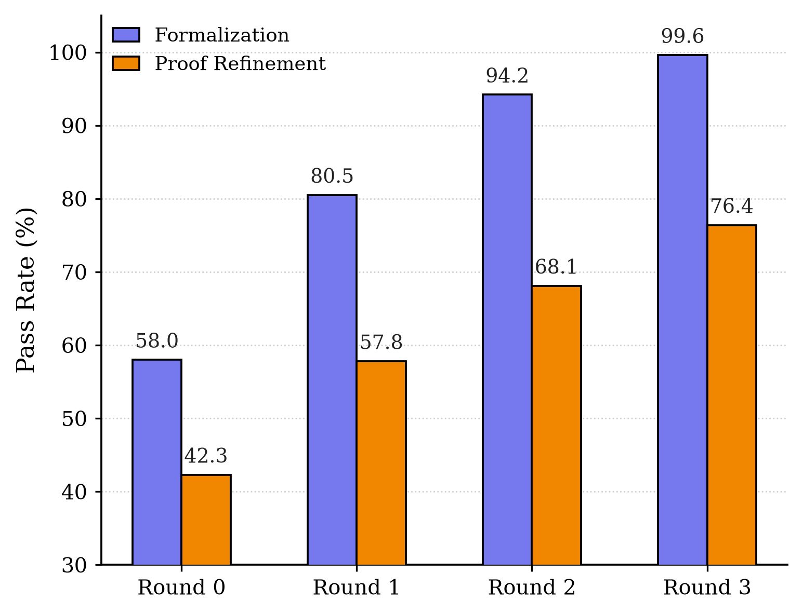

Translates natural-language logic problems into Lean4 premises and goals, using Lean4 proof checking as an RL reward signal and for iterative proof repair.
Abstract
Logical reasoning derives conclusions from premises through explicit intermediate inference steps, providing a natural basis for process-level verification and supervision. However, existing learning methods often rely on response-level outcome signals, which overlook heterogeneous correctness within the reasoning trace: a correct answer may contain invalid reasoning, while valid intermediate steps may also appear in an incorrect response. To address this issue, we introduce Reinforcement Learning on Verifiable Logical Reasoning (VeriLogic), which turns internal reasoning traces into explicit and verifiable learning objects. Rather than treating a response as an indivisible learning unit, VeriLogic decomposes logical reasoning into explicit intermediate judgments, proofs, and final decisions, and organizes them into a unified "Grounding - Optimization - Refinement" pipeline: (1) Verification-Grounded Reasoning Environment Construction grounds logical reasoning into explicit intermediate states and formally checkable proof obligations, making the internal reasoning process accessible to verification and learning; (2) Logical Structured Policy Optimization learns from verifier feedback through complementary global and local rewards, jointly optimizing the overall reasoning outcome while providing targeted optimization signals to different intermediate reasoning paths; and (3) Verifier-Guided Iterative Refinement acts on verifier feedback by leveraging proof states and error messages to iteratively diagnose and repair failed reasoning. Experiments on six logical reasoning benchmarks show consistent gains over strong baselines, with average improvements of 6.39% and 5.00% on Qwen3 and Llama-3.1. These results highlight the value of making logical reasoning traces verifiable, learnable, and refinable beyond final-answer supervision.
Problem
Reinforcement learning for LLM logical reasoning mostly uses response-level outcome rewards. These rewards ignore that a correct answer may rest on invalid reasoning, and that an incorrect response may still contain valid intermediate steps.
Approach
VeriLogic splits each True/False/Unknown problem into Positive, Negative and Unknown reasoning paths. It translates the context and query into a Lean4 premise set and target proposition, so proofs on the Positive and Negative paths can be checked by Lean4. PSAR-GRPO adds a global outcome advantage to path-specific local advantages, with Lean4 verification run inside the on-policy rollout loop. At inference time, failed proofs are repaired iteratively using Lean4 proof states and error messages.

Figure 2 . Overview of VeriLogic. VeriLogic follows a unified Grounding–Optimization–Refinement pipeline: it constructs explicit and verifiable reasoning paths, combines global outcome supervision with path-specific local advantages through PSAR-GRPO, and iteratively repairs unsuccessful proofs using Lean4 feedback at inference time.
Results
On six logical reasoning benchmarks (MultiLogic, ProofWriter, FOLIO, ProverQA, LogiQA, e-SNLI), VeriLogic improves average accuracy over the strongest baseline by 1.83 points on Qwen3-8B, 5.00 on Llama-3.1-8B and 6.39 on Qwen3-4B. Ablations show that correct path routing and verifier-guided refinement both contribute.

Figure 3 . Component ablation of VeriLogic on Qwen3-8B. Macro-averaged accuracy over six logical reasoning datasets under formalization, GRPO, PSAR-GRPO, verifier-guided refinement, and full VeriLogic configurations, together with matched controls.

Figure 5 . Verifier feedback by repair round.
Model
Base
GRPO
Best baseline
VeriLogic
Qwen3-8B
90.00
92.70
94.70 (LogicReward)
96.53
Llama-3.1-8B
56.50
61.06
62.39 (LogicReward)
67.39
Qwen3-4B
76.70
81.03
84.06 (LPT)
90.44
Average accuracy (%) over six benchmarks under the Lean4-formalized setting